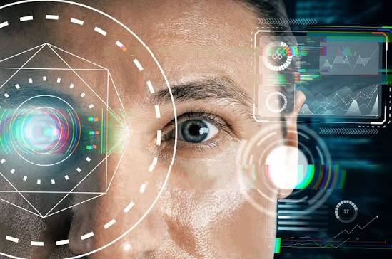

La visión por computadora

La visión por computadora (o visión artificial) es un subcampo de la inteligencia artificial (IA) que entrena y permite a las computadoras e ingenierías interpretar, analizar y extraer datos significativos a partir de imágenes digitales, videos y otras entradas visuales. Su objetivo principal es emular la complejidad del sistema visual humano para que las máquinas puedan "ver" y comprender su entorno de forma autónoma
Funcionamiento General
- Adquisición de datos: Cámaras, sensores o dispositivos ópticos capturan la realidad en forma de fotografías o fotogramas de video, traduciendo la información visual en matrices de píxeles numéricos que el ordenador puede procesar
- Procesamiento y Extracción: Utilizando algoritmos de aprendizaje profundo (Deep
- Learning) y Redes Neuronales Convolucionales (CNN), el sistema descompone las imágenes para identificar patrones, bordes, colores y formas complejas sin necesidad de una programación manual explícita.
- La máquina compara estos patrones con grandes bases de datos previamente entrenadas para clasificar los elementos detectados y tomar una decisión automatizada (por ejemplo, frenar un vehículo o dar acceso a un usuario).
- Aplicaciones Reales • 🎯 Reconocimiento Facial: Tecnología utilizada en la seguridad de teléfonos móviles y control de accesos que mapea las características faciales de una persona para verificar su identidad de forma única. • 🩺 Análisis de Imágenes Médicas: Herramientas de diagnóstico que procesan radiografías, resonancias magnéticas y tomografías para detectar automáticamente anomalías, tumores o fracturas con alta precisión. • 🚗 Detección de Objetos: Componente crítico para la navegación de vehículos autónomos y robots industriales que localiza y etiqueta elementos circundantes en tiempo real, distinguiendo entre peatones, señales de tráfico u otros coches.
.jpg)
La visión por computadora (o visión artificial) es un campo de la inteligencia artificial (IA) que permite a los sistemas informáticos interpretar, analizar y extraer información significativa a partir de imágenes digitales, videos u otros datos visuales. Su objetivo principal es entrenar a las computadoras para que "vean" y comprendan el mundo físico de forma similar a como lo hace el sistema visual humano.
>En resumen
.jpg)